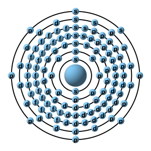

L'oganesson (simbolo Og) è un elemento superpesante sintetico. Si trova nella serie dei gas nobili e ha il numero atomico 118. È stato scoperto nel 2002 da un team di scienziati russi e statunitensi, che hanno sintetizzato l'elemento mediante collisioni di atomi di californio con atomi di curio.
L'oganesson è estremamente instabile e si decompone rapidamente in altri elementi, talmente instabile, che dal 2005 sono stati prodotti solo 5 atomi di Oganesson. A causa della sua breve durata di vita, è difficile studiare le sue proprietà chimiche e fisiche. Tuttavia, si ritiene che possa essere un metallo radioattivo, con una massa atomica molto grande.
Non ci sono molti altri dettagli noti sull'oganesson, poiché è stato scoperto di recente e c'è ancora molto da imparare su questo elemento. Tuttavia, la sua scoperta è stata considerata un importante passo avanti nella comprensione della chimica degli elementi di alta massa e delle proprietà dei gas nobili.

1s² 2s² 2p⁶ 3s² 3p⁶ 3d¹⁰ 4s² 4p⁶ 4d¹⁰ 4f¹⁴ 5s² 5p⁶ 5d¹⁰ 5f¹⁴ 6s² 6p⁶ 6d¹⁰ 7s² 7p⁶
| Stato a STP | Solido |
| Temperatura di fusione | 52 ± 15 °C |
| Temperatura di ebollizione | 177 ± 10 °C |
| Densità (da solido) | 7,2 g/cm3 |
| Densità (da liquido) | 6,6 g/cm3 |
| Stati di ossidazione | −1, 0, +1, +2, +4, +6 |
| Energia di 1^ ionizzazione | 860 kJ/mol |
| Energia di 2^ ionizzazione | 1560 kJ/mol |
| Emivita* dell'unico isotopo scoperto | 0,69 ms |
Il 19 aprile 1999, il capo del team di ricerca degli elementi pesanti al laboratorio dell'univeristà di Berkeley in California, Darleane Hoffman, ricevette una telefonata da tre membri del suo team che le chiesero di incontrarli di persona.
Preoccupata che qualcosa fosse andato storto durante l'esperimento per scoprire l'elemento 118, Hoffman fu rassicurata dal capo squadra, Ken Gregorich, che le notizie erano buone. Una volta giunti nell'ufficio di Hoffman, Victor Ninov le presentò un grafico a mano che dimostrava come il team avesse scoperto tre nuovi elementi il 13 aprile. Ninov era stato reclutato nel 1996 dal team di Berkeley per competere con un gruppo rivale di Dubna, in Unione Sovietica, capitanato da Georgy Flerov e Yuri Oganessian, che si era recentemente unito al laboratorio di Livermore in California, poiché anche loro stavano cercando un modo per sintetizzare l'elemento 118.
Il team di Berkeley aveva tentato di creare l'elemento 118 sparando un fascio di ioni krypton-86 contro un bersaglio di piombo-203, basandosi sulle previsioni di un fisico teorico polacco, Robert Smolańczuk.
Dopo aver visto l'analisi di Ninov, Hoffman decise di fare ulteriori verifiche prima di annunciare la scoperta, e il team eseguì nuovamente l'esperimento il 30 aprile. Questa volta, tuttavia, venne ottenuta una sola catena di decadimento, e il 27 maggio il team di Berkeley annunciò la scoperta su Physical Review Letters, includendo tutti coloro che avevano lavorato all'esperimento come coautori.
Dopo l'annuncio, altri team iniziarono a ripetere l'esperimento di Berkeley, sperando di ottenere risultati simili, ma questo non fu il caso.
Quando arrivò la notizia della scoperta dell'elemento 118 da parte del team di Berkeley nel 1999, Sigurd Hofmann decise di replicare l'esperimento per confermare l'esistenza di questo elemento. Tuttavia, dopo una settimana di tentativi, non era ancora riuscito a trovare traccia dell'elemento 118, che teoricamente sarebbe dovuto essere facile da produrre. Anche altri team in Francia e Giappone avevano tentato di ottenere l'elemento 118 seguendo la stessa reazione proposta da Robert Smolańczuk, senza successo.
Nel frattempo, molti scienziati avevano iniziato a sospettare qualcosa di strano nell'atteggiamento di Ninov durante le conferenze, dove risultava evasivo quando gli venivano chieste informazioni sui suoi nuovi elementi.
Tutto ciò sollevò preoccupazioni per il suo comportamento non professionale e la necessità di una verifica accurata dei risultati sperimentali.
Partendo dall'inizio, la situazione con Ninov era destinata a causare problemi, in quanto era l'unico nel laboratorio di Berkeley a saper utilizzare l'algoritmo GOOSY, sperimentato in precedenza al laboratorio GSI (Società per la ricerca sugli ioni pesanti, a Darmstadt in Germania), dove prima lui lavorava.
Dopo l'annuncio che il team aveva scoperto tre nuovi elementi, uno dei membri, Don Peterson, ha rieseguito i dati dal suo laboratorio alla Oregon State University come misura di precauzione.
Tuttavia, ha scoperto che i dati non coincidevano, con alcune parti uguali e altre completamente diverse. Quando Peterson si è avvicinato al membro del team Walter Loveland con i suoi risultati, Loveland si è preoccupato e ha avvertito il resto del team.
Il team di Berkeley ha rapidamente avviato un'indagine, con un rapporto confidenziale di Darleane Hoffman che affermava che i nuovi elementi "non esistevano nei dati" e un comitato indipendente, guidato dal fisico Gerald Lynch, che è stato chiamato per valutare la situazione.
Per far sembrare che i dati fossero veritieri, infatti, Ninov aveva copiato il registro degli eventi e lo aveva modificato a mano, inserendolo poi di nuovo nell'algoritmo in modo che sembrasse vero.
Alla fine, dopo le analisi della commissione, è stato determinato che c'era stata una frode scientifica e Victor Ninov è stato trovato colpevole e licenziato dal laboratorio. Oscurando perennemente la reputazione di Berkeley, che fino ad ora aveva scoperto la maggior parte degli elementi sintetici, e di tutti quelli nominati nell'articolo iniziale, nei quali vi erano presenti anche semplici studenti che si ritroveranno per sempre macchiati da ciò.